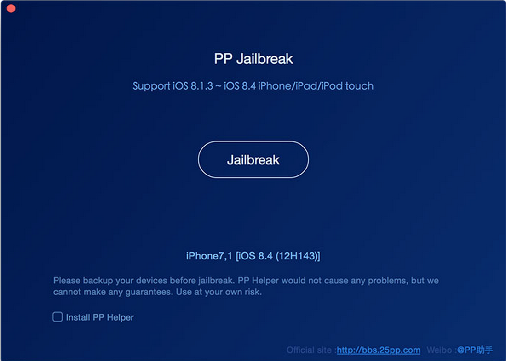

Jailbreak iPhone/iPad
Hướng dẫn Jailbreak trên MacOS
- B1: Tải phần mềm mới nhất của PP jailbreak trên trang http://www.iphonehacks.com/download-pp-jailbreak .
- B2: Kết nối máy tính sử dụng USB cable.
- B3: Tắt Passcode trong Settings > Touch ID & Passcode.
- B4: Tắt Find my iPhone trong Settings > iCloud > Find my iPhone.
- B5: Tắt iTunes và xCode trước khi mở PP Jailbreak.
- B6: Mở file PP Jailbreak dmg và copy tập tin app vào thư mục Application.
- B7: Mở ứng dụng PP Jailbreak. Sẽ xuất hiện màn hình như bên dưới

- B8: Nhấn nút Jailbreak ở giữa màn hình để bắt đầu jailbreak.
- B9: Chờ trong 1 khoảng thời gian để ứng dụng jailbreak máy.
- B10: Sau khi jailbreak thành công sẽ có màn hình như bên dưới.

Cài đặt appsync
- Mở ứng dụng Cydia
- Chọn phần Sources > Edit
- Chọn Add để thêm các source sau vào
- http://repo.appvv.com
- http://repocydia.com
- http://repo.hackyouriphone.org
- http://cydia.angelxwind.net
- Nếu có hỏi thì chọn “Add anyway” và update …
- Sau đó chọn done
- Vào phần Search gõ AppSync > Install
Tài liệu tham khảo
- http://www.iphonehacks.com/2015/07/how-to-jailbreak-ios-8-4-on-mac-using-pp-jailbreak.html